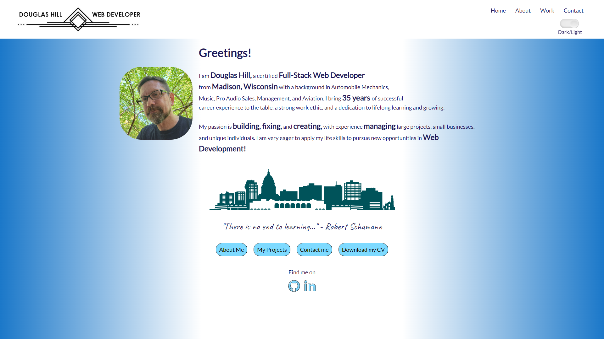

My Portfolio Website
A simple HTML/CSS website, showcasing some styling skills. Created as part of the curriculum in Career Foundry's Fullstack Developer Bootcamp, this was one of the first sites I created.
Meet App

Progressive Web App that allows users to search for a city and view a list of events happening there. Built with React using a test-driven development (TDD) technique. The application uses the Google Calendar API to fetch upcoming events.
MyFlix App

A movie database application built with React. Users can register, log in, and view information about different movies, directors, and genres. They can also add and remove movies from their list of favorites. The application uses a REST API that I created with Node.js and Express.
Pokédex

A simple JavaScript application built using jQuery and Bootstrap, drawing data from a public api.
ChatApp

The ChatApp is a mobile app which provides users with a very basic CHAT interface, and options to share images and their location. It features Asynchronous offline storage on the client side, and a real-time Firebase/Firestore database on the server side. The app is built using React Native, Expo, and Google Firestore.